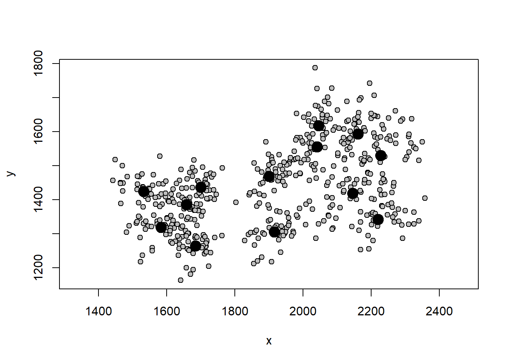
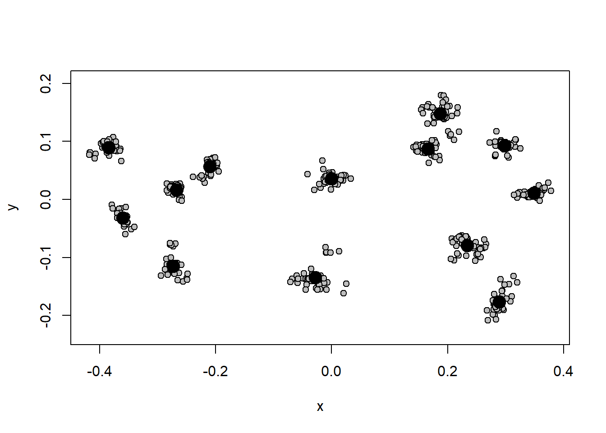
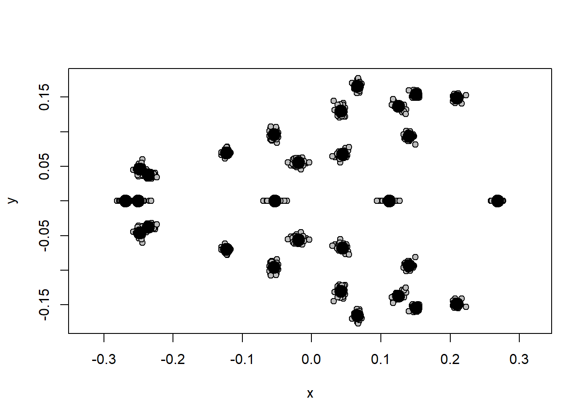
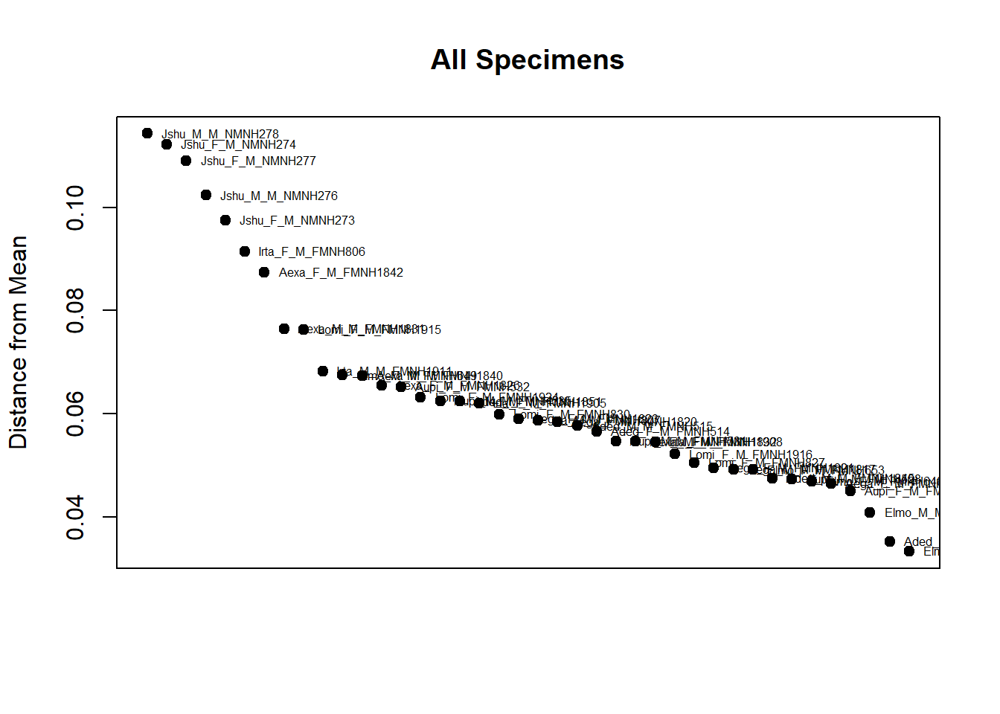

O passo primário fundamental em morfometria geométrica é a Análise Generalizada de Procrustes (GPA - Generalized Procrustes Analysis), que remove os efeitos de rotação/orientação, translação/posição e tamanho dos objetos. O resultado é uma matriz com as variáveis de forma. Outros métodos de superposição de marcos anatômicos foram propostos, para revisões, veja Monteiro and Reis (1999); Adams, Rohlf, and Slice (2004); Zelditch, Swiderski, and Sheets (2012), mas a GPA é o mais popular e mais adequado na maioria dos casos.
Na GPA, os efeitos de translação/posição são removidos pois (i) o centróide de cada configuração é transladado para a origem: as coordenadas do centróide de cada configuração são subtraídas da coordenada correspondente de cada landmark, gerando a centralização ou superposição das configurações. Os efeitos de tamanho são removidos pois (ii) as configurações são escaladas/proporcionalizadas para um tamanho de centróide único após a divisão das coordenadas dos landmarks pelo seu tamanho do centróide. E os efeitos de rotação/orientação são removidos pois (iii) a raiz quadrada da soma das distâncias ao quadrado entre os landmarks correspondentes é minimizada usando rotação otimizada por quadrados mínimos; o processo inicia rotacionando as configurações em relação à uma forma de referência, em seguida, uma nova forma de referência (a média da configuração de landmarks) é calculada, e o processo se repete iterativamente até que as diferenças de orientação sejam minimizadas.
Em duas dimensões, dois graus de liberdade são perdidos com a translação, um grau de liberdade é perdido com o escalonamento e um grau de liberdade é perdido com a rotação, totalizando quatro graus de liberdade perdidos. Em três dimensões, três graus de liberdade são perdidos com a translação, um grau de liberdade é perdido com o escalonamento, e três graus de liberdade são perdidos com a rotação, totalizando sete graus de liberdade perdidos.
6.1 O objeto .tps no R
O arquivo .tps criado no TPSDig2 pode ser lido no R com a função readland.tps do pacote geomorph. Antes, lembre-se de colocar o arquivo .tps na pasta dadosmg e definir essa pasta como diretório de trabalho no R.
# Carregar geomorph require(geomorph)
Carregando pacotes exigidos: geomorph
Carregando pacotes exigidos: RRPP
Carregando pacotes exigidos: Matrix
# Importar arquivo .tps # lembre-se de substituir por "nomequevocêdeu.tps"tps<-readland.tps("dadosmg/mandibula.dig_curso.tps",specID ="ID", readcurves =FALSE) dim(tps) tps
Podemos visualizar os dados brutos com a função plotAllSpecimens.
plotAllSpecimens(tps)

Os círculos maiores representam a posição média do landmark, e os círculos menores representam a posição de cada landmark.
Use indexação com [] para localizar certos landmarks ou indivíduos. Por exemplo.
# Deletar espécimestps.new<-tps[,,-7] # deleta espécime n 7# Deletar landmarkstps.new<-tps[-5,,] # deleta landmark n 5
6.2 Estimar landmarks faltantes
A função estimate.missing do pacote geomorph implementa dois métodos para estimar landmarks faltantes.
Podemos visualizar a distribuição dos dados de tamanho e forma. Note a diferença no gráfico da forma antes e depois da análise de Procrustes.
hist(size)
plotAllSpecimens(shape)

6.4 Espaço tangente
A correlação do espaço de forma com o espaço tangente quase sempre será muito alta em dados de morfometria geométrica, justificando o uso de estatística Euclidiana.
require(Morpho)regdist(shape)
6.5 Formato array e matrix
Os dados de forma estão em formato array. Podemos nos mover facilmente entre os formatos array e matrix. Ambos carregam a mesma informação, mas algumas análises/operações só aceitam um dos dois formatos.
6.6 GPA com simetria de objeto
Quando os dados tiverem simetria e objeto, vamos informar isso ao R com uma matriz contendo os pares de landmarks simétricos e realizar uma GPA considerando a simetria.
# Carregar dadostps.sim<-readland.tps("dadosmg/Lista tuco dig 2.tps",specID ="ID", readcurves =FALSE)dim(tps.sim)# Matriz com landmarks simétricospairs.matrix<-matrix(c(2,3,5,6,7,8,10,11,12,13,14,15,16,17,18,19,20,21,23,24,25,26,27,28),nrow=12,ncol=2,byrow=T)pairs.matrix# Construir vetor com rótulo de indivíduos (neste caso, uma marcação por indivíduo)ind<-c(1:dim(tps.sim)[3])# GPA com simetria bilateralb.s<-bilat.symmetry(tps.sim,ind=ind,object.sym=TRUE,land.pairs=pairs.matrix)shape.sym<-b.s$symm.shape # componente simétrico da formaplotAllSpecimens(shape.sym)

6.7 Encontrando outliers
Podemos encontrar indivíduos muito diferentes dos demais observando sua distância em relação à forma média da amostra. Em morfometria geométrica, é comum a marcação de landmarks trocados em alguns indivíduos, o que vai gerar óbvios outliers.
plotOutliers(shape)

7 Visualização da forma
Existem várias maneiras de visualizar mudanças de forma com dados de Morfometria Geométrica (ver Klingenberg (2013)). Aliás, essa é uma das vantagens da morfometria geométrica em comparação com a morfometria tradicional. As formas mais comuns de visualização são por grids de deformação, vetores (ou lollipops), e através da construção de links entre os landmarks e extrapolação da forma via outlines e surfaces. Em qualquer caso, é importante perceber que a diferença de forma está contida apenas entre os landmarks/semilandmarks; as extrapolações de forma além dos landmarks (via grids e outlines, por exemplo) podem ser úteis para visualização, mas devem ser interpretadas com bastante cautela. É também importante perceber que a interpretação das mudanças de forma não deve considerar os landmarks individualmente, mas sim a sua mudança relativa a todos os outros landmarks.
Construção de forma média da amostra para comparação.
Os links entre os landmarks também podem ser definidos interativamente com a função define.links do pacote geomorph.
7.1 Método de grid de deformação.
# Definir cor dos landmarks e linksGP1<-gridPar(pt.bg="gray",link.col="gray",link.lty=1) # cor dos landmarks e links# Gráfico de mudança de formaplotRefToTarget(ref,shape[,,8],links=links,method="TPS")
# Gráfico de mudança de formaGP1<-gridPar(pt.bg="gray",tar.out.col ="red",tar.out.cex =0.5)plotRefToTarget(ref,shape[,,8],outline=outline$outline,method="TPS")plotRefToTarget(ref,shape[,,8],outline=outline$outline,method="points",gridPars=GP1)
Com um número suficiente de pontos, dá-se a impressão de um desenho. Veja o exemplo do pacote geomorph.
Klingenberg, Christian Peter. 2013. “Visualizations in Geometric Morphometrics: How to Read and How to Make Graphs Showing Shape Changes.”Hystrix, the Italian Journal of Mammalogy 24 (1): 15–24. https://doi.org/10.4404/hystrix-24.1-7691.
Monteiro, L. R., and S. F. dos Reis. 1999. Princípios de Morfometria Geométrica. Holos, Ribeirão Preto.
Zelditch, Miriam Leah, Donald L. Swiderski, and H. David Sheets. 2012. Geometric Morphometrics for Biologists. Second Edition. Elsevier Inc.